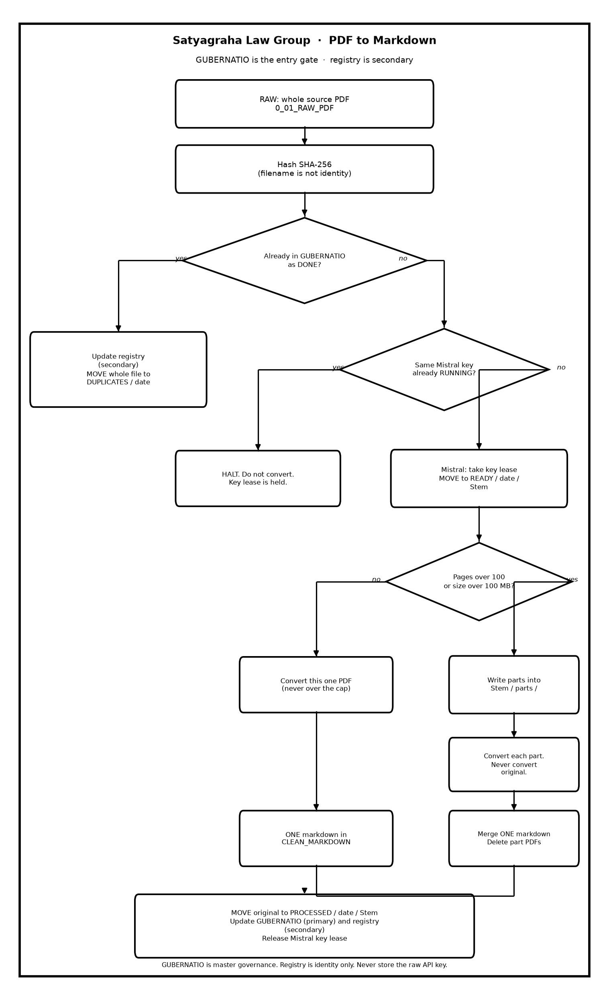

Convert Pipeline Flowchart
Happy path for PDF to Markdown. GUBERNATIO is the entry gate after SHA-256. Registry is identity only. A Mistral convert takes a 15-minute key lease (sentinel SLG-pdf_to_md_file_naming_convention.text). Local Tesseract does not. Split happens at Ready for Doc Link so no convert job is over 100 pages or 100 MB.

What the picture says
- Drop the whole source PDF in
0_01_RAW_PDF. - Hash SHA-256. Filename is not identity. Append a GUBERNATIO row for this filename (Latin: governance, steering, direction, administration).
documentsstays one row per hash. - If GUBERNATIO already has that hash as
DONE, update the identity registry second and move the whole file to50_90_DUPLICATES / date. Unchanged. No split. - If this is a Mistral convert and the same key fingerprint is already
RUNNING(unexpired), HALT. Do not move RAW. An expired lease is free after 15 minutes. - Otherwise (Mistral: take the key lease) move it to
10_02_READY_FOR_DOCLING / date / Stem / Stem.pdf. - If it is over 100 pages or 100 MB, write parts of at most those caps into
Stem / parts /. Convert the parts. Never convert the original. - Merge the part markdown into one file in
20_03_CLEAN_MARKDOWN. Page headings continue 1..N. - Delete the part PDFs.
- Move the original
Stem.pdfto60_90_PROCESSED / date / Stem / Stem.pdf.
Drop PDF → Choose engine → Wait → Open Markdown.
This is a research project at Satyagraha Law Group as part of its pursuit of excellence in legal research. It is not legal advice, not a solicitation, and not an offer to represent anyone.
Related documents
- Product overview (wiki [[README]])
- Lawyer user guide (wiki [[Mistral-Engine-Guide]])
- Workflow (wiki [[Process-Workflow-Guide]])
- Architecture (wiki [[System-Architecture-Diagram]])
- Lawyer instruction guide